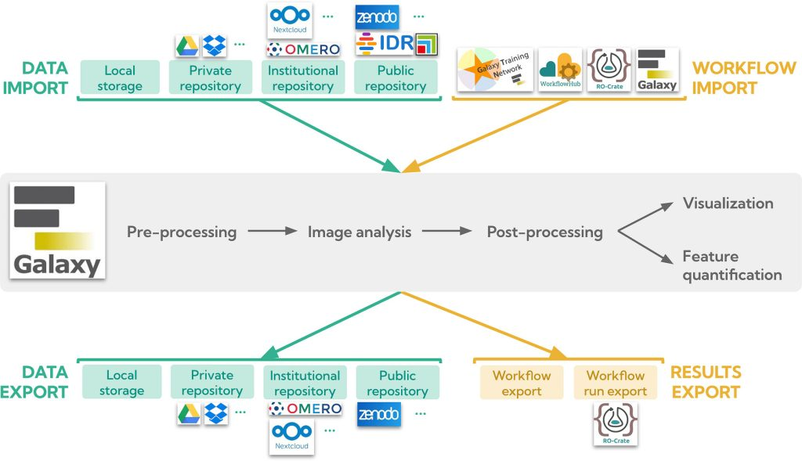
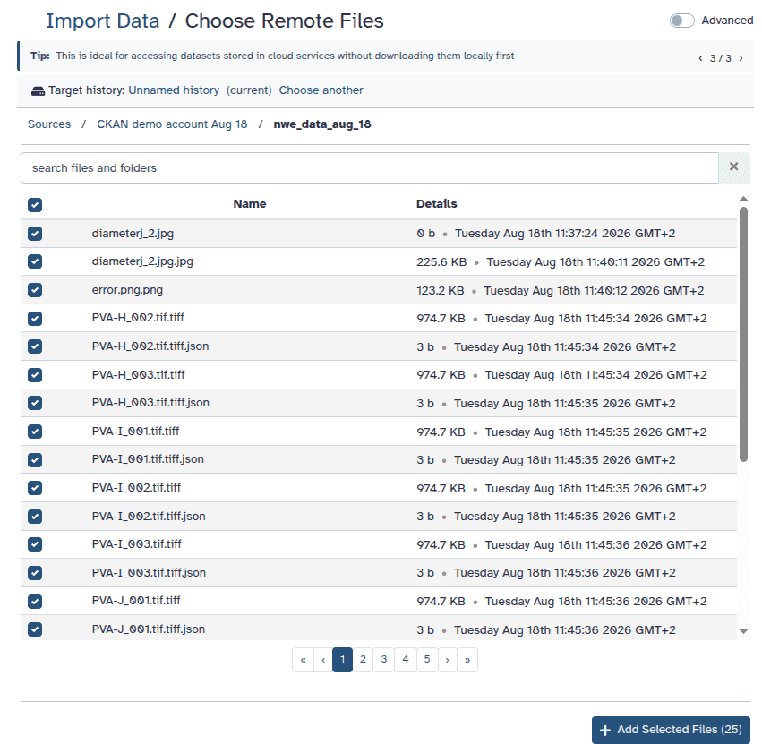

Design system · Direction A
Brand evolution: the same Galaxy, calmer and denser, in light and dark. Tokens, components and states used by every prototype page.
Colour roles and contrast
Every colour is a semantic role token declared once as light-dark(light, dark) in styles.css; components never use raw hex. Brand tokens come from tokens.json with no new hues. Ratios below are computed from those tokens (WCAG 2.1 relative luminance) for both themes.
Brand tokens (light) and dark surfaces
- galaxy-dark
#2c3143
Chrome in light: sidebar, footer, mobile bar, headings - galaxy-primary
#25537b
Links, marks, month band, focus ring (light) - galaxy-gold
#ffd700
Scarce accent in both themes: active bar, primary CTA, page-head rule, focus on chrome - light-bg
#edf4fa
Tints in light: tags, callouts, table header, hover - ebony-clay-950
#212532
Context header well - medium-bg
#3c435c
Inputs and hover on dark chrome - galaxy-grey
#58585a
Meta text (light) - chicago-900
#3c3c3d
Body text (light)
- --surface
#121419
Page - --surface-2
#171a21
Row hover, panels - --surface-raised
#1b1e27
Cards - --surface-overlay
#232734
Menus - --surface-tint
#172536
Tints - --chrome
#1c2030
Sidebar, footer - --chrome-well
#131620
Context well - --link
#8cbbe9
Links, icons
Roles in light and dark
| Role / tokens | Light | Dark | Use |
|---|---|---|---|
Body text--text on --surface | Aa#3c3c3d / #ffffff11.02:1 AAA | Aa#d5d8df / #12141912.91:1 AAA | Body copy 16/1.6. |
Headings--text-strong on --surface | Aa#2c3143 / #ffffff12.90:1 AAA | Aa#f0f1f4 / #12141916.31:1 AAA | h1–h4, titles. |
Lead / secondary--text-2 on --surface | Aa#4f4e50 / #ffffff8.27:1 AAA | Aa#c0c4cc / #12141910.54:1 AAA | Lead 18/28, teasers. |
Meta--meta on --surface | Aa#58585a / #ffffff7.10:1 AAA | Aa#a3a8b4 / #1214197.74:1 AAA | Dates, bylines, captions 14/20. |
Meta on card--meta on --surface-raised | Aa#58585a / #ffffff7.10:1 AAA | Aa#a3a8b4 / #1b1e276.99:1 AA | Rows and cards on raised surfaces. |
Meta on sunken--meta on --surface-sunken | Aa#58585a / #f5f5f66.51:1 AA | Aa#a3a8b4 / #22262f6.36:1 AA | Worst meta pair (count pills, code). |
Link--link on --surface | Aa#25537b / #ffffff8.07:1 AAA | Aa#8cbbe9 / #1214199.12:1 AAA | Underlined; hover adds a gold underline. |
Link hover--link-hover on --surface | Aa#1f4465 / #ffffff10.13:1 AAA | Aa#bfdaf4 / #12141912.77:1 AAA | Dark: lighter blue, never gold text. |
Link on tint--link on --surface-tint | Aa#25537b / #edf4fa7.27:1 AAA | Aa#8cbbe9 / #1725367.68:1 AAA | Callouts, tinted rows. |
Tag / type badge--text-brand on --surface-tint | Aa#1f4465 / #edf4fa9.13:1 AAA | Aa#bfdaf4 / #17253610.74:1 AAA | Tag chips, type badges, origin region. |
Menu item--text-strong on --surface-overlay | Aa#2c3143 / #ffffff12.90:1 AAA | Aa#f0f1f4 / #23273413.18:1 AAA | Region picker (floats over chrome). |
Menu meta--meta on --surface-overlay | Aa#58585a / #ffffff7.10:1 AAA | Aa#a3a8b4 / #2327346.25:1 AA | Picker paths and domains. |
Badge upcoming--ok-text on --ok-bg | Aa#006b15 / #eef7ef6.16:1 AA | Aa#74d08e / #12291a8.22:1 AAA | Text + icon, never colour alone. |
Badge past / ended--past-text on --past-bg | Aa#4f4e50 / #f5f5f67.59:1 AAA | Aa#c0c4cc / #22262f8.66:1 AAA | Neutral archive state. |
Primary button--on-accent on --accent | Aa#2c3143 / #ffd7009.20:1 AAA | Aa#2c3143 / #ffd7009.20:1 AAA | The one gold CTA per view (same in both). |
Selected chip / page--on-selected on --selected | Aa#ffffff / #25537b8.07:1 AAA | Aa#10131a / #8cbbe99.20:1 AAA | aria-pressed chips, current page number. |
Date-block month--on-brand on --brand-fill | Aa#ffffff / #25537b8.07:1 AAA | Aa#ffffff / #2b5f8e6.71:1 AA | Month band, numbered list. |
Tooltip--tip-text on --tip-bg | Aa#ffffff / #21253215.27:1 AAA | Aa#14171f / #e6e8ee14.63:1 AAA | Inverse in dark. |
Nav item--chrome-text on --chrome | Aa#dfe2ea / #2c31439.96:1 AAA | Aa#d7dae3 / #1c203011.57:1 AAA | Sidebar links. |
Nav sub-item--chrome-text-2 on --chrome | Aa#d3d6e2 / #2c31438.90:1 AAA | Aa#c7cad6 / #1c20309.89:1 AAA | Nested links. |
Nav group label--chrome-meta on --chrome | Aa#bbc0d2 / #2c31437.12:1 AAA | Aa#a9aec0 / #1c20307.32:1 AAA | 12px uppercase. |
Active nav pill--chrome-strong on --chrome-active over chrome | Aa#ffffff / #454a5a8.82:1 AAA | Aa#ffffff / #373b4911.15:1 AAA | 12% white over chrome + gold bar. |
Context kind--chrome-meta on --chrome-well | Aa#bbc0d2 / #2125328.42:1 AAA | Aa#a9aec0 / #1316208.17:1 AAA | Inside the context header. |
Context 'Change'--chrome-link on --chrome-well | Aa#aecce7 / #2125329.15:1 AAA | Aa#9fc4e8 / #1316209.92:1 AAA | Region control label. |
Gold on chrome--chrome-accent on --chrome | Aa#ffd700 / #2c31439.20:1 AAA | Aa#ffd700 / #1c203011.53:1 AAA | Back link, region mark, active bar. |
Footer text / link--footer-text on --chrome | Aa#d0d0d1 / #2c31438.37:1 AAA | Aa#c9ccd3 / #1c203010.06:1 AAA | Footer body; links are lighter. |
Band text (worst stop)--band-text-2 on --band-to | Aa#dfe2ea / #25537b6.23:1 AA | Aa#d7dae3 / #1f44657.25:1 AAA | Region/project band lead. |
Input border--input-border on --surface | #878789 / #ffffff3.59:1 Pass 3:1 | #737a8c / #1214194.29:1 Pass 3:1 | 1.4.11 needs 3:1. |
Focus ring--focus on --surface | #25537b / #ffffff8.07:1 Pass 3:1 | #8cbbe9 / #1214199.12:1 Pass 3:1 | 2px outline, 2px offset. |
Focus ring on chrome--chrome-focus on --chrome | #ffd700 / #2c31439.20:1 Pass 3:1 | #ffd700 / #1c203011.53:1 Pass 3:1 | Gold on the sidebar. |
Selected chip edge--selected on --surface | #25537b / #ffffff8.07:1 Pass 3:1 | #8cbbe9 / #1214199.12:1 Pass 3:1 | Pressed state boundary. |
Sidebar vs content--chrome on --surface | #2c3143 / #ffffff12.90:1 info | #1c2030 / #1214191.14:1 info | Surface step, informational. |
Themes: light and dark
The theme follows prefers-color-scheme by default. The switch in the sidebar footer (in the sheet on mobile) sets data-theme on <html> and remembers it in localStorage["hub-proto-theme"]; ?theme=dark|light in the URL wins for that view and is carried on internal links. data-theme on any element re-themes its subtree, which is how the panes on this page work.
Dark keeps the model: the sidebar stays chrome (its own, bluer surface level, one step lighter than the page, with a hairline edge), content goes to a neutral near-black, gold stays scarce (active bar, primary CTA, page-head rule, focus on chrome), and logos with dark lettering sit on a light plate.
Light
Dark
Type scale
Atkinson Hyperlegible 400/700, html{font-size:100%}, all sizes in rem. Body never below 16px on mobile. The scale is the same in both themes.
| Token | Size / line-height | Specimen |
|---|---|---|
h1 | 30px / 36px · 700 (26px mobile) | Galaxy Freiburg |
h2 | 22px / 1.3 · 700 · 40px above, 12px below | Upcoming events |
h3 | 18px / 1.4 · 700 · 28px above | Galaxy Mentor Network |
h4 | 16px / 1.5 · 700 · 24px above | Well-being and Mental Health Guideline |
lead | 18px / 28px · 400 · --text-2 | Galaxy resources and news from the University of Freiburg |
body | 16px / 1.6 · 400 · paragraph gap 16px · max 72ch | Galaxy is an open-source platform for FAIR data analysis. |
meta | 14px / 20px · 400 · --meta | |
micro | 12px / 16px · 700 · uppercase · 0.06em | On this page |
nav | 14px / 20px · 32px rows · active 700 | The Galaxy Community |
Spacing, radius and elevation
Spacing (4px grid)
4px8px12px16px24px32px40px48px64px
Radius
6pxcontrols10pxsurfaces (rounded-lg)999pxchips, badges
Elevation
Shadows get darker and denser in dark; raised surfaces also step up in lightness so depth does not rely on shadow alone.
Light
- Flat · reading surface, rows
- shadow-sm · cards
- shadow-md · card hover, menus
- shadow-lg · sheet only
Dark
- Flat · reading surface, rows
- shadow-sm · cards
- shadow-md · card hover, menus
- shadow-lg · sheet only
Sidebar and top bar
The dark 256px sidebar stays. Its top is pinned: logo, optional back link, context header, search. Only the nav below scrolls, with fade edges and a visible thin scrollbar. The footer of the sidebar holds the theme switch.
Light
freiburg.html)Back to Galaxy Freiburg
Back to Galaxy Freiburg
esg.html)Dark
freiburg.html)Back to Galaxy Freiburg
Back to Galaxy Freiburg
esg.html)Light
aria-current, hover and focusDark
aria-current, hover and focusMobile header (<1024px, 56px)
Light
Dark
Region picker
Disclosure button + list of links (no select-to-navigate). Arrow keys, Home/End, Escape (focus returns to the button), Tab leaves and closes. The current context is marked with a check and aria-current="true"; the remembered home region gets a "Home" badge; AU and CA are external links. In dark the menu is the overlay surface, one step above the chrome.
Light
Dark
Breadcrumbs and page header
First crumb names the context. Middle crumbs collapse to "…" below 640px. Region and project homes use a restrained band (≤180px) instead of the tall gradient hero; in dark it starts from the chrome colour and gets a hairline edge.
Light
Freiburg Galaxy Projects
The Freiburg Galaxy Team is highly involved in many projects related to the global Galaxy community.
Regional community · University of Freiburg
Galaxy Freiburg
Galaxy resources and news from the University of Freiburg
Dark
Freiburg Galaxy Projects
The Freiburg Galaxy Team is highly involved in many projects related to the global Galaxy community.
Regional community · University of Freiburg
Galaxy Freiburg
Galaxy resources and news from the University of Freiburg
On-this-page rail
224px, sticky (top: 24px, no overflow-hidden ancestors), shown ≥1280px, hidden below. Scroll-spy sets aria-current="true".
Light
Dark
News row and news tile
One card family in two densities: the row for listings (one link per item, stretched), the tile for featured items.
Light


Dark
Event row
Date block (month band in the brand fill; grey when past) + status badge with text and icon.
Project card and platform card
The ESG logo has near-black lettering, so in dark it sits on a light plate (as do partner, server and EU-funding logos).
Light

[One-line summary from frontmatter description.]
Improving computational workflows in Galaxy by maturing Pulsar Network and publishing computational workflows as FAIR Digital Objects.

UseGalaxy.eu
UseGalaxyPublic Server
The free public European Galaxy server
usegalaxy.euGermany
Dark
[One-line summary from frontmatter description.]
Improving computational workflows in Galaxy by maturing Pulsar Network and publishing computational workflows as FAIR Digital Objects.
UseGalaxy.eu
UseGalaxyPublic Server
The free public European Galaxy server
usegalaxy.euGermany
Section header
Tags and badges
Light
Upcoming Past Ended · Aug 2025 Domain specific Global
Dark
Upcoming Past Ended · Aug 2025 Domain specific Global
Buttons
40px tall (36px small, 44px on touch), 6px radius. Focus: 2px outline in the focus role, 2px offset (gold on chrome). The gold primary button is identical in both themes.
Light
Dark
Callout
Light
Good to know
Training on June 25-26 is separate from the main conference.
This project has ended
EuroScienceGateway ran from September 2022 to August 2025.
Dark
Good to know
Training on June 25-26 is separate from the main conference.
This project has ended
EuroScienceGateway ran from September 2022 to August 2025.
Table
Tinted header, row headers, 16px cells. Reflows to stacked rows below 640px (see Get Started).
Light
| Special Interest Group | Here is how they did it |
|---|---|
| Biodiversity | The Biodiversity success story from 2022-2025 |
| Climate Science | The Climate Science success story from 2022-2025 |
Dark
| Special Interest Group | Here is how they did it |
|---|---|
| Biodiversity | The Biodiversity success story from 2022-2025 |
| Climate Science | The Climate Science success story from 2022-2025 |
Filter chips and pagination
Chips are toggle buttons with aria-pressed and a count; results are announced in a status line. In dark the pressed chip and the current page flip to a light-blue fill with dark text.
Light
Dark
Empty state
Light
No Galaxy servers match these filters
Try a different search term or clear the filters.
Dark
No Galaxy servers match these filters
Try a different search term or clear the filters.
Mobile nav sheet
Left sheet (min(320px, 88vw)) holding the same sidebar: same context header, groups and theme switch. Focus is trapped, Escape closes, focus returns to the button that opened it. The region chip opens the sheet with the picker already open.
Light
Back to Galaxy Freiburg
Dark
Back to Galaxy Freiburg
Footer
The footer below is the live component and follows the page theme: chrome frame, gold brand title, links at 8.4:1 or better in both themes, visible text on icon links. On region pages it adds a region strip (contact, team, funding).